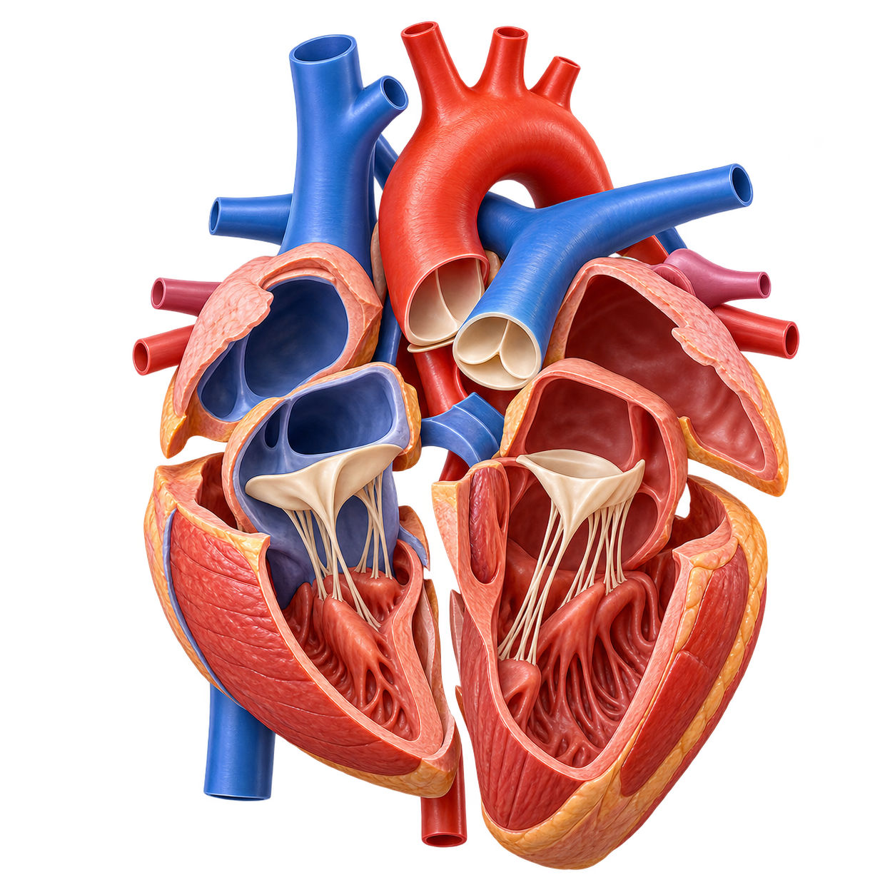

Modelo anatómico 3D
Observa el órgano desde cerca.

Modelo educativo: órgano aislado, sin estar dentro del cuerpo.
Elige un órgano y obsérvalo fuera del cuerpo, como en una maqueta anatómica. Lee sus funciones y responde sus cinco preguntas.
Observa el órgano desde cerca.

Modelo educativo: órgano aislado, sin estar dentro del cuerpo.